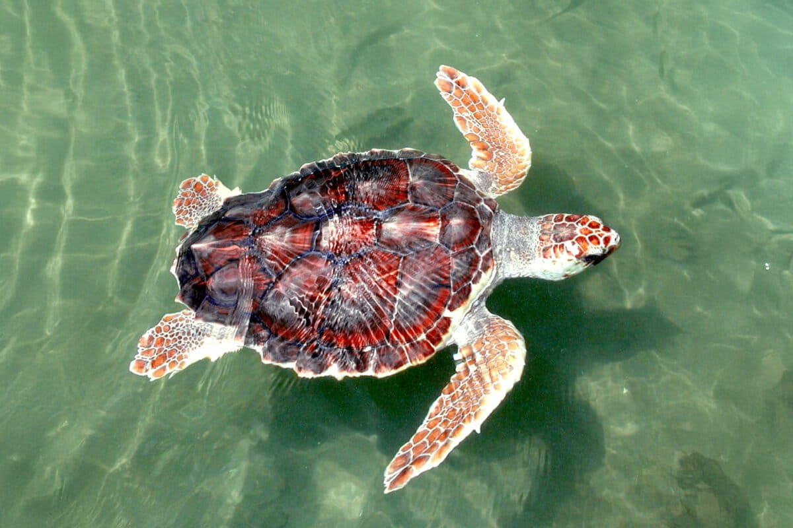
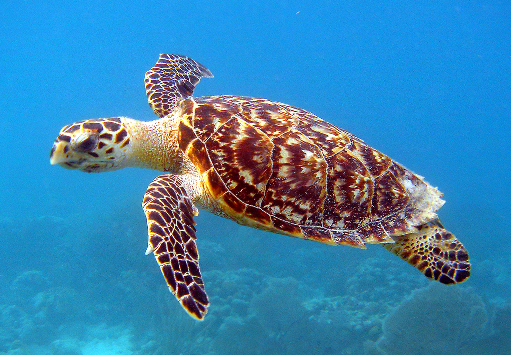
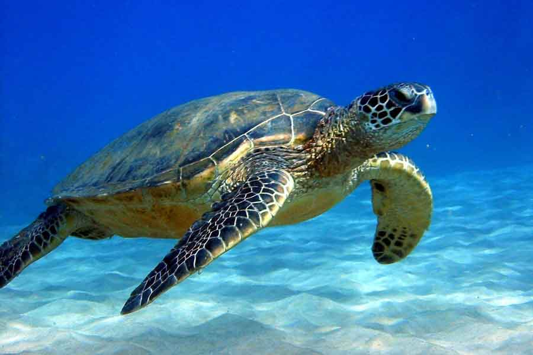

| Tipos de tortuga en Guerrero | ||
|---|---|---|
| Tortuga Blanca / Negra (Chelonia mydas agassizii) |
.jpg) |
Anidación Masiva Vulnerable |
| Tortuga Caguama del Pacífico (Caretta caretta) |
 |
Anidación Masiva |
| Tortuga Carey del Pacífico (Eretmochelys imbricata bissa) |
 |
Anidación Masiva |
| Tortuga Golfina (Lepidochelys olivacea) |
 |
Anidación Masiva |